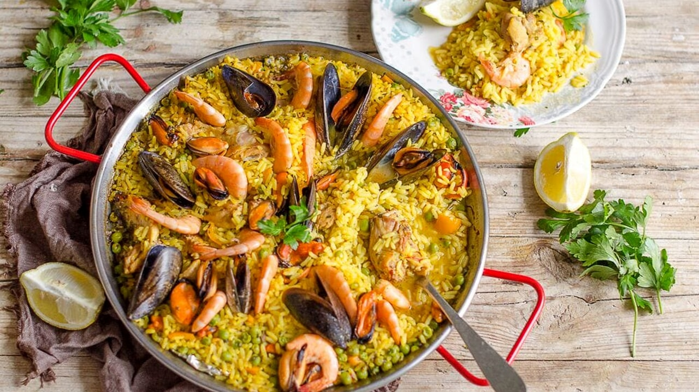

Ricette Tipiche della Spagna
Pasta alla carbonara
Ingredienti:
- 2 cucchiai di olio d'oliva
- 1 cipolla grande, tritata finemente
- 2 spicchi d'aglio, tritati
- 1 peperone rosso, tagliato a fette sottili
- 1 peperone verde, tagliato a fette sottili
- 2 pomodori maturi, pelati e tritati
- 400 g di riso per paella (riso a grano corto)
- 800 ml di brodo di pollo (preferibilmente fatto in casa)
- 200 g di pollo, tagliato a pezzi
- 200 g di gamberi sgusciati
- 200 g di cozze o vongole
- 200 g di calamari, tagliati a pezzi
- Zafferano (un pizzico)
- Sale q.b.
- Pepe nero q.b.
- Prezzemolo fresco tritato (per guarnire)
- Limone a spicchi (per servire)
Istruzioni:
- Inizia preriscaldando una paellera (una padella ampia e poco profonda) o una padella antiaderente grande sul fuoco medio-alto. Aggiungi l'olio d'oliva e fai soffriggere la cipolla e l'aglio fino a quando diventano morbidi e traslucidi.
- Aggiungi i peperoni e continua a cuocere per qualche minuto fino a quando si ammorbidiscono leggermente.
- Aggiungi i pomodori tritati e cuoci per altri 2-3 minuti, fino a quando il composto diventa un po' denso.
- Aggiungi il pollo e cuoci fino a quando è leggermente dorato.
- Aggiungi il riso per paella e mescola bene per assicurarti che ogni grano sia ben ricoperto dall'olio e dalle spezie.
- Versa il brodo di pollo caldo nella paellera. Aggiungi lo zafferano, il sale e il pepe nero. Mescola delicatamente per distribuire uniformemente gli ingredienti. Fai sobbollire a fuoco medio-alto per circa 10 minuti.
- Riduci la fiamma a medio-basso e distribuisci i gamberi, le cozze o le vongole e i calamari sulla superficie del riso. Non mescolare più il riso dopo aver aggiunto il pesce e i frutti di mare.
- Continua a cuocere a fuoco medio-basso per altri 10-15 minuti, o finché il riso è cotto e assorbe il liquido. Durante la cottura, potresti dover coprire la paellera con un coperchio o un foglio di alluminio per trattenere il vapore.
- Una volta che il riso è cotto e il liquido è stato assorbito, rimuovi la paellera dal fuoco e lascia riposare per alcuni minuti.
- Spolverizza la paella con prezzemolo fresco tritato e guarnisci con spicchi di limone.
- Servi la paella direttamente dalla padella, facendo attenzione a non graffiare la superficie antiaderente. Assicurati di distribuire uniformemente il riso e i frutti di mare nei piatti.

Torna alla pagina principale